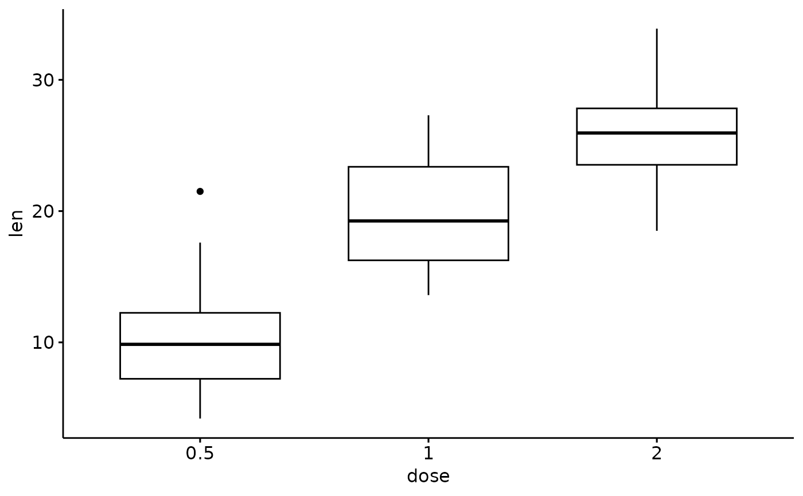

Setting aes(label=..p.adj..) in ggpubr::compare_means() does not
show adjust p values. The returned result of this function can be combined with ggpubr::stat_pvalue_manual() to fix
this problem.
get_adj_p(
data,
.col,
.grp = "Sample",
comparisons = NULL,
method = "wilcox.test",
p.adjust.method = "fdr",
p.digits = 3L,
...
)Source
https://github.com/kassambara/ggpubr/issues/143
Arguments
- data
a
data.framecontaining column for groups and column for comparison.- .col
column name for comparison.
- .grp
column name for groups.
- comparisons
Default is
NULL, use all combination in group column. It can be a list of length-2 vectors. The entries in the vector are either the names of 2 values on the x-axis or the 2 integers that correspond to the index of the groups of interest, to be compared.- method
a character string indicating which method to be used for comparing means. It can be 't.test', 'wilcox.test' etc..
- p.adjust.method
correction method, default is 'fdr'. Run
p.adjust.methodsto see all available options.- p.digits
how many significant digits are to be used.
- ...
other arguments passed to
ggpubr::compare_means()
Value
a data.frame containing comparison result
Details
More info see ggpubr::compare_means(), ggpubr::stat_compare_means() and stats::p.adjust().
Examples
library(ggpubr)
#> Loading required package: ggplot2
# T-test
stat.test <- compare_means(
len ~ dose,
data = ToothGrowth,
method = "t.test",
p.adjust.method = "fdr"
)
stat.test
#> # A tibble: 3 × 8
#> .y. group1 group2 p p.adj p.format p.signif method
#> <chr> <chr> <chr> <dbl> <dbl> <chr> <chr> <chr>
#> 1 len 0.5 1 1.27e- 7 1.9e- 7 1.3e-07 **** T-test
#> 2 len 0.5 2 4.40e-14 1.3e-13 4.4e-14 **** T-test
#> 3 len 1 2 1.91e- 5 1.9e- 5 1.9e-05 **** T-test
# Create a simple box plot
p <- ggboxplot(ToothGrowth, x = "dose", y = "len")
p

# Add p values
my_comparisons <- list(c("0.5", "1"), c("1", "2"), c("0.5", "2"))
p + stat_compare_means(method = "t.test", comparisons = my_comparisons)
 # Try adding adjust p values
# proposed by author of ggpubr
# however it does not work
p + stat_compare_means(aes(label = ..p.adj..), method = "t.test", comparisons = my_comparisons)
# Solution:
# calculate adjust p values and their location
# then use stat_pvalue_manual() function
p_adj <- get_adj_p(ToothGrowth, .col = "len", .grp = "dose")
p_adj
#> # A tibble: 3 × 9
#> .y. group1 group2 p p.adj p.format p.signif method y.position
#> <chr> <chr> <chr> <dbl> <chr> <chr> <chr> <chr> <dbl>
#> 1 len 0.5 1 0.00000702 1.1e-05 7.0e-06 **** Wilcoxon 37.3
#> 2 len 0.5 2 0.0000000841 2.5e-07 8.4e-08 **** Wilcoxon 40.7
#> 3 len 1 2 0.000177 0.00018 0.00018 *** Wilcoxon 44.1
p + stat_pvalue_manual(p_adj, label = "p.adj")
# Show selected comparisons
# Of note, p value is ajusted
# for three comparisons, but only
# two are showed in figure
p_adj <- get_adj_p(ToothGrowth,
.col = "len", .grp = "dose",
comparisons = list(c("0.5", "1"), c("1", "2"))
)
p + stat_pvalue_manual(p_adj, label = "p.adj")
# Try adding adjust p values
# proposed by author of ggpubr
# however it does not work
p + stat_compare_means(aes(label = ..p.adj..), method = "t.test", comparisons = my_comparisons)
# Solution:
# calculate adjust p values and their location
# then use stat_pvalue_manual() function
p_adj <- get_adj_p(ToothGrowth, .col = "len", .grp = "dose")
p_adj
#> # A tibble: 3 × 9
#> .y. group1 group2 p p.adj p.format p.signif method y.position
#> <chr> <chr> <chr> <dbl> <chr> <chr> <chr> <chr> <dbl>
#> 1 len 0.5 1 0.00000702 1.1e-05 7.0e-06 **** Wilcoxon 37.3
#> 2 len 0.5 2 0.0000000841 2.5e-07 8.4e-08 **** Wilcoxon 40.7
#> 3 len 1 2 0.000177 0.00018 0.00018 *** Wilcoxon 44.1
p + stat_pvalue_manual(p_adj, label = "p.adj")
# Show selected comparisons
# Of note, p value is ajusted
# for three comparisons, but only
# two are showed in figure
p_adj <- get_adj_p(ToothGrowth,
.col = "len", .grp = "dose",
comparisons = list(c("0.5", "1"), c("1", "2"))
)
p + stat_pvalue_manual(p_adj, label = "p.adj")